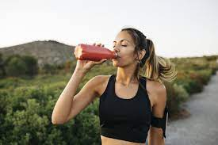

Fueling Your Best Run: A Quick Guide
Author: Avery McLeanRunning your best requires the right nutrition, no matter your experience level. Here's a straightforward guide: Begin with Hydration: Stay well-hydrated with 16-20 ounces of water 2-3 hours before your run, and another 7-10 ounces just before starting. This prevents fatigue and muscle cramps. Opt for Complex Carbs: Choose complex carbohydrates like whole grains, fruits, and vegetables for sustained energy. Avoid sugary or processed foods that can cause energy spikes and crashes. Timing is Crucial: Eat a light snack 1-2 hours before your run, such as a banana, a small bowl of oatmeal, or a granola bar. Avoid heavy, fatty, and protein-rich meals immediately before your workout.

Recovery Post-Run: After your run, refuel with a balanced meal or snack containing carbohydrates and protein. This helps with muscle recovery and prepares you for your next run. Consistency Matters: Establish a nutrition routine that suits your body. Experiment during training runs to find the best foods and timing for your individual needs. Listen to Your Body: Pay attention to how your body reacts to different foods and timing. Some may require more digestion time, while others can eat closer to their run. Rehydrate Afterward: Focus on rehydration, mainly with water, after your run. Consider a sports drink for prolonged runs or extreme conditions to replenish lost electrolytes. Customize your nutrition strategy to match your unique needs and running goals. By experimenting, staying well-hydrated, and tuning into your body, you can unlock your full running potential and work towards achieving your goals. Happy running!
Types of Food you Need for Fuel and Examples
| Food Group | Example |
|---|---|
| carbohydrates | rice |
| protein | eggs |
| vegetables/fruit | carrots/apple |
| healthy fat | almonds |
| hydration | gatorade |